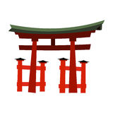

Product List:


- 
Game Description:
Mission Statement:
Our mission is to provide the highest quality entertainment and gaming to rural Minnesota, at a reasonable price.
Employees:
Our knowlegable staff is dedicated to providing patrons with excellent service and expertise.
Social Media: